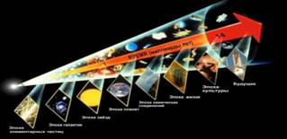
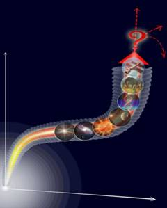
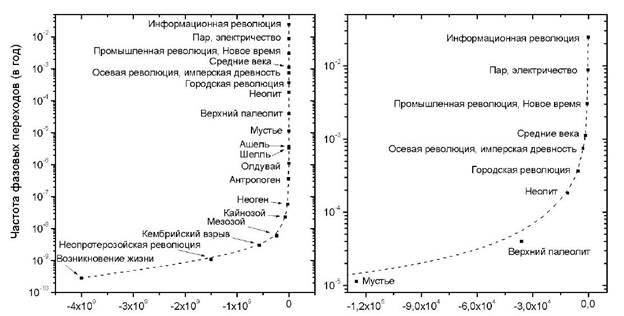

Страницы авторов "Тёмного леса"
Пишите нам! temnyjles@narod.ru
Вестник РАН, 2015, N9
Оригинал на английском языке: Peering into the 21st Century: Mega-History and its "Mysterious Singularity"
Серия расчётов, проведённых независимо исследователями Австралии, России и США, показала, что около середины XXI века может произойти беспрецедентная по значению глобальная полифуркация. Вывод получен путём экстраполяции в будущее логарифмического закона ускорения, который охватывает фазовые переходы в истории биосферы и антропосферы на протяжении 4 млрд. лет. В статье рассматриваются паллиативы планетарной цивилизации за пределами большой эволюционной Сингулярности в контексте Мегаистории и синергетики. Такой подход обеспечивает универсальные основания полученного математического вывода и, кроме того, помогает привлечь новейшие данные психологии и культурной антропологии для прорисовки аттракторов и сценариев. Судьба Земной и, вероятно, любой иной планетарной цивилизации может решающим образом зависеть от того, успеет ли носитель разума усовершенствовать качество внутренней регуляции, соответствующее потенциально беспредельному развитию технологической мощи. В частности, это предполагает преодоление макрогрупповых размежеваний, религиозных и квазирелигиозных идеологий, которые всегда разделяли людей на "своих" и "чужих".
Ключевые слова: Мегаистория, синергетика, универсальная эволюция, стрелы времени, векторы, ускорение, фазовый переход, техно-гуманитарный баланс, XXI век, сингулярность, аттракторы, сценарии, религия, идеология.
В 1958 году выдающийся математик Дж. Фон Нейман заметил в беседе со своим коллегой С. Уламом: "Постоянно ускоряющийся прогресс в технологии и в жизни... наводит на мысль о приближающейся фундаментальной сингулярности в истории нашего вида, за которой знакомый нам человеческий мир не может продолжаться" (цит. по [Eden et al. 2012: 4]). Экзотический образ грядущей сингулярности проник и в книги российских историков, которые применяли его в аналогичном контексте, хотя и интерпретировали диаметрально противоположно [Поршнев 1966; Дьяконов 1994].
Череда последовавших открытий вызвала растущий интерес учёных и философов к этой математической экстраполяции, касающейся близкого будущего. В 2008 году при НАСА был открыт Университет Сингулярности.
Мы далее покажем, что категория Сингулярности получает универсальное основание в соотношении с Мегаисторией и синергетикой (теорией сложности), которые помогают проследить паллиативы планетарного развития в XXI веке.
Три версии истории конкурировали в сознании европейцев XIX-XX веков. Евроцентрическая, линейная (позже обогащённая диалектической спиралью) и по сути телеологическая картина последовательного прогресса "от худшего к лучшему", направленного к идеальному состоянию общества, противостояла традиционному представлению (невольно подкреплённому термодинамикой) о нисхождении от божественного истока к безбожному хаосу. Третья модель вовсе отвергала "человеческую историю" как единый процесс, усматривая в прошлом исключительно циклы рождения, роста, процветания и краха региональных "цивилизаций", лишённые причинных зависимостей и глобально значимых событий.
Между тем в археологии, антропологии и других дисциплинах накапливались факты, позволившие выделить не менее семи переломных вех в общечеловеческой истории и предыстории (таких как неолитическая революция, осевой переворот и т.д.), а также отчётливую преемственность в развитии, несмотря на многочисленные циклы, завершавшиеся региональными катастрофами. Более того, преобладающие векторы социального развития оказались продолжением тех мегатенденций, которые прослеживаются в эволюции биосферы и, далее, в космофизической эволюции Метагалактики.
Так сформировались предметы всемирной, глобальной и Универсальной (Большой или Мега-) истории, которые в совокупности составляют интегральную картину прошлого - настолько, насколько оно сегодня доступно ретроспекции. Далее в статье тезисно представлены положения, которые подробнее и с пунктуальными библиографическими ссылками развёрнуты в книге [Назаретян 2015].
Парадигма всемирной истории сформировалась в конце XVIII века, вместе с национальными историями, под влиянием идей гуманизма и прогресса. Она основана на эволюционной методологии и в нынешней версии охватывает все социальные и культурные события от палеолита до современности.
Концепция глобальной истории - продукт первой половины XX века, когда были доказаны преемственность, а также обоюдное влияние геологических, биотических и социальных процессов. В её рамках изучается последовательное рождение и преобразование планетарных сфер по мере того как сначала биота, а затем культура становились ведущими факторами эволюции. Провозвестники глобальной истории - П. Тейяр де Шарден и В.И. Вернадский, - как подавляющее большинство их современников, были убеждены в том, что область эволюции ограничена Солнечной системой, тогда как вселенная бесконечна в пространстве и времени, стационарна и потому внеисторична. Эволюционный процесс на Земле - всего лишь локальная флуктуация, обречённая на то, чтобы раствориться, подобно океанической волне, во вселенной, которая не менялась и "не будет меняться с течением времени" [Вернадский 1978, с.136].
Но по мере того как космология отказывалась от стационарных представлений интегральная картина эволюции распространилась до масштаба Метагалактики (или Вселенной с большой буквы). Окончательная кристаллизация предмета Мегаистории связана с ещё одним фундаментальным обстоятельством: обнаружились сквозные векторы последовательных трансформаций в космической Вселенной, биосфере, социальной организации, материальной, гуманитарной культуре и психике. При этом, хотя прямых противоречий с физическими законами необратимости (время как рост энтропии) обнаружить не удаётся, направленность векторов явно расходится с парадигмой классического естествознания.
А именно, Метагалактика последовательно эволюционировала от более вероятных однородных состояний ("естественных", с "энтропийной" точки зрения) к менее вероятным ("неестественным"), так что истории биосферы и антропосферы суть локализованные фазы единого универсального процесса. Мегатенденция возрастающей сложности столь очевидно контрастирует с ожиданиями, вытекающими из естественнонаучной картины мира, и вместе с тем столь надёжно подкрепляется эмпирическими данными естественных и гуманитарных наук, что астрофизики вынуждены различать термодинамическую стрелу времени и космологическую стрелу времени и обсуждать причинную связь между ними [Chaisson 2006] (см. Рис.1).
|  | Рис.1. Эпохи космической эволюции (приводится с любезного согласия автора - Э. Чайсона). См. http://www.eskesthai.com/2010/07/cosmic-evolution-and-powers-of-ten.html. |
В специальной литературе встречаются различные подходы к объяснению такой удивительной направленности универсальной эволюции, вплоть до откровенно телеологических и даже теологических. Основу для междисциплинарной модели свободной от потусторонних и/или целевых допущений составляют современные теории самоорганизации.{1} В их рамках совершенствование антиэнтропийных механизмов рассматривается не как цель, а как средство сохранения неравновесных систем (природы и общества) в условиях снизившейся устойчивости. Отсюда, например, "человеческая история есть единая самовоспроизводящаяся система, существующая на протяжении около миллиона лет" [Christian 1991, p.238] и вынужденная эволюционировать для регулярного восстановления устойчивости.
Но действительно ли векторное представление о человеческой истории соответствует наличным данным? Возражения против такого вывода часто с вязаны с неготовностью оппонентов варьировать дистанции, масштабы и оптические приборы для получения многомерной картины.
Рассматривая исторические события через микроскоп, мы видим множество деталей, но не траектории изменений. Широкоформатные линзы открывают картину рождающихся, растущих и умирающих племён и цивилизаций, разветвляющихся и часто ломающихся линий, но не корреляций между параметрами изменений в различных региональных объектах: история видится циклической или многолинейной. Исследователь различает деревья и кусты, ветви и листья, но не долгосрочные тенденции или закономерности.
Увидеть за деревьями лес позволяют телескопические линзы, обеспечивающие самый мелкий масштаб и, соответственно, крупные временны`е и пространственные блоки. Так становится возможным сопоставлять отдалённые эпохи, прослеживать опосредованные связи и заметить, что предметом социальной эволюции всегда служили не отдельные племена, государства и "цивилизации", а антропосфера как единая становящаяся система. Точно так же, чтобы обнаружить глобальную биологическую эволюцию, необходимо отвлечься от отдельных популяций, видов и даже локальных биоценозов и сопоставлять состояния биосферы в различных точках геохронологической шкалы. В таком случае становится очевидным последовательный рост морфологического, видового и поведенческого разнообразия, "интеллектуальных" качеств биоты, а также усиливавшееся влияние её активности на геологические процессы.
С тех пор как Homo habilis Олдовайского ущелья начали регулярно производить искусственные орудия, формировалась надприродная реальность, под которую со временем подстраивался внешний мир. О том, что, несмотря на бесчисленные дивергенции, миграции и изоляции, культура оставалась единым образованием, свидетельствует идентичность первых стандартизированных артефактов - ручное рубило - на территориях Африки и Китая. Взрывообразный же рост локальных различий, начавшийся в среднем палеолите, стал типичным для эволюционирующей системы проявлением внутренней диверсификации.
Масштабный обзор делает очевидной преемственность глобальных изменений, их векторность, а также сопряжённость эволюционных векторов. Удалось выделить шесть тесно переплетённых векторов, прослеживаемых на протяжении 2 млн. лет с последовательным ускорением: рост населения, технологической мощи, организационной сложности и информационной ёмкости интеллекта, совершенствование механизмов культурной регуляции и увеличение удельного веса виртуальной реальности.
Первые три вектора представляют собой "эмпирические обобщения" и легко подкрепляются числовыми выкладками. Следующие три выведены при помощи специальных методов и аргументов. Но все они укладываются в интегральную гротескную формулу "удаление от естества", т.е. единая социоприродная система последовательно удалялась от "естественного" ("дикого") состояния, приобретая всё более выраженные антропоморфные качества. Возрастала степень орудийного (в том числе знакового) опосредования в социо-природных и внутрисоциальных отношениях, а также в индивидуальном психическом отражении. Так ядро глобальных причинно-следственных зависимостей сдвигалось в сторону ментальных процессов, особенно после того как неолитические агроценозы обозначили решающий перелом в становлении антропосферы (или Ноосферы).
Лидерство в многотысячелетнем марафоне многократно переходило от одного региона или континента к другому, включая Австралию: 40-60 тысяч лет назад предки нынешних аборигенов создали первые наскальные рисунки, каменные орудия с полированной рукояткой, первые средства для передвижения по воде и т.д. Европа и затем Северная Америка выдвинулись на передовые рубежи эволюции в последние века.
Анализ антропогенных, особенно глобальных кризисов обнаружил парадоксальный факт. Вопреки лозунгам некоторых современных экологов ("Назад к Природе!" и проч.), обострения в социоприродных отношениях радикально преодолевались не приближением общества к природе, а напротив - очередным витком "денатурализации" общества вместе с его естественной средой. В этом легко убедиться, сопоставив присваивающее хозяйство охотников-собирателей с производящим хозяйством неолита или информационное общество с индустриальным. Каждый скачок предварялся системным кризисом прежних форм деятельности и сопровождался преобразованиями по всем сопряжённым параметрам. В результате экологическая ниша человека расширялась и углублялась, население росло вместе с мощью технологий, потребностями и амбициями и... продолжался путь к следующему кризису.
Во время Второй мировой войны философ и социолог Н. Элиас, еврей, потерявший родных в Холокосте, интернированный в Англии как немец, по выходе на свободу работал в лондонских архивах, собирая доказательства того, что на протяжении веков уровень насильственной смертности в обществе сокращался [Элиас 2001]. В последующем его выводы были подтверждены сравнительными расчётами, проведёнными британскими, американскими [Gurr 1981; Cockburn 1991; Eisner 2003; Pinker 2011] и российскими исследователями. Мы использовали кросс-культурный показатель - коэффициент кровопролитности [Назаретян и др. 2005; Nazaretyan 2010]: отношение среднего числа убийств в единицу времени к численности населения. Специальная формула позволяет также сравнивать уровни смертоносного насилия по векам. Сопоставительные оценки показывают, что, хотя разрушительный потенциал технологий и демографическая плотность на протяжении тысячелетий возрастали, т.е. убивать становилось легче, уровень насильственной смертности нелинейно, но последовательно снижался{2}.
Едва ли такая парадоксальная динамика отражает "снижение агрессивности": напротив, психологический опыт показывает, что у людей, как и у животных, плотность популяции выше естественной экологической нормы сопровождается ростом агрессивности. Значит, для объяснения противоречивого сочетания долгосрочных тенденций следует найти более правдоподобный фактор, компенсирующий увеличение орудийного потенциала.
Обобщение исторических, антропологических и психологических сведений, касающихся антропогенных катастроф, позволило выявить системную зависимость между тремя переменными: технологическим потенциалом, качеством культурной регуляции и социальной устойчивостью. Закон техно-гуманитарного баланса гласит, что чем выше мощь производственных и боевых технологий, тем более совершенные средства внутренней регуляции необходимы для сохранения общества.
То, что мы называем законом, выведено из эмпирических наблюдений. Соответствующая гипотеза состоит в том, что механизм техно-гуманитарного баланса изначально стимулировал отбор жизнеспособных социальных образований. Для проверки следствий этой гипотезы нами и проводились сравнительные расчёты уровней социального насилия.
Обстоятельства жизни ранних гоминидов сложились так, что только радикальное развитие орудийного интеллекта давало им шанс на выживание. Но, начав производить искусственные орудия, они драматически нарушили этологический баланс между естественной вооружённостью диких животных и инстинктивным ограничением внутривидовых убийств. Убойная мощь чопперов сразу превзошла прочность инстинктивного торможения агрессии (хабилисы разбивали черепа заострёнными галечными отщепами), и доля смертоносных конфликтов стала несовместимой с дальнейшим существованием вида. Это могло стать главной причиной того, что "на полосу, разделяющую животное и человека, много раз вступали, но далеко не всегда её пересекали" [Кликс 1985, с.32].
Коль скоро особи с нормальной животной мотивацией были обречены на взаимное истребление, в новых неестественных обстоятельствах селективное преимущество приобрели популяции с преобладанием психастенических и истерических индивидов. Выживание требовало искусственной (отличной от биологических инстинктов) коллективной регуляции, которая была обеспечена патологическими изменениями в психике, аномальной умственной лабильностью, внушаемостью и фобиями. Наиболее разработанная гипотеза связывает ограничение агрессии с первыми признаками анимизма, иррациональным страхом мёртвых и посмертной мести. Дополнительным эффектом психологических сдвигов стала забота о калеках: свидетельства таких "биологически несообразных" действий археологи находят уже в нижнем палеолите.
Предположение о том, что у истоков рода Homo находится "стадо невротиков", исследовалось неврологами, культурными антропологами и психологами (подробнее см. [Назаретян 2002; Nazaretyan 2005]). Здесь важно отметить, что исходные формы протокультуры и протоморали связаны с первым экзистенциальным кризисом человеческой предыстории.
С тех пор сверхприродная способность к внутривидовым убийствам составляла стержневую проблему прасоциальной и социальной истории: способы её решения определяли формы организации, культурные и духовные процессы. Поскольку дальнейшее существование семейства гоминидов (включая вид неоантропов) была лишена естественных гарантий, оно в значительной степени обеспечивалось адекватностью культурных регуляторов технологическому потенциалу. По мере того как мощь орудий и демографическая плотность возрастали культура совершенствовала средства сублимации агрессии для адаптации к растущим разрушительным возможностям; механизм техно-гуманитарного баланса отсеивал социумы, не сумевшие своевременно совладать с достигнутой мощью технологий.
Предложенная модель помогает объяснить не только парадокс снижавшегося физического насилия при растущем деструктивном потенциале, но также факты неожиданного коллапса процветавших обществ и прорывы человечества в новые исторические эпохи (которые часто выглядят ещё более загадочно). Её формальный аппарат [Назаретян 2007, 2009] демонстрирует, что с ростом технологического потенциала возрастала внешняя устойчивость общества - степень его независимости от спонтанных колебаний природной и геополитической среды. Вместе с тем общество становилось более уязвимым по отношению к колебанию массовых настроений, импульсивным решениям авторитетных лидеров и т.д., т.е. его внутренняя устойчивость снижалась, если мощь технологий не компенсирована совершенствованием культурных регуляторов.
Углубляющийся дисбаланс обычно провоцирует социально-психологические эффекты, которые, в свою очередь, форсируют кризисогенное поведение. Когда новые технологии перестают соответствовать прежним культурным ограничениям, массовые установки и чувства приобретают специфические особенности. Интенсифицируется ощущение всемогущества и вседозволенности, растут потребности и амбиции. Эйфория успеха рождает нетерпеливое ожидание всё новых успехов и иррациональную жажду "маленьких победоносных войн" - массовый комплекс катастрофофилии, по выражению голландского политического философа [Sloterdijk 1983]. Процесс покорения и поиск умеренно сопротивляющихся врагов становится самоценным, а из специальных психологических экспериментов [Петренко 2010] известно, что сильные эмоции уплощают картину мира (снижают размерность семантического пространства). Уплощённая картина, в свою очередь, толкает к импульсивным решениям, и так культурная разбалансировка снижает жизнеспособность ("дуракоустойчивость") общества.
Отвлекаясь здесь от дополнительных психологических деталей, отметим только, что дисбаланс чреват разрушительными последствиями в случае как боевых, так и производственных технологий. Например, А. Тойнби [1991] иллюстрировал примерами отрицательную зависимость между "военным и социальным прогрессом" и с удивлением указывал на то, что такая зависимость фиксируется и при увеличении мощи оружия, и при развитии сельскохозяйственных орудий. У. Макнил писал: "Действительно выходит, что... каждый раз рост эффективности производства оборачивается новой угрозой обвала" [McNeill 1992: 148].
Многочисленные факты, собранные в историко-географической литературе, свидетельствуют о печальной судьбе обществ, не сумевших предвидеть отсроченные последствия своей хозяйственной активности [Григорьев 1991; Global... 2002]. При всех особенностях каждого конкретного случая общая схема развития событий достаточно проста: нарастающее вторжение в экосистему --> разрушение ландшафта --> социальная катастрофа.
Итак, совершенствование культурно-психологических регуляторов на протяжении тысячелетий обусловлено не небесным промыслом и не капризами великих моралистов, а прагматикой жизнеспособности и жестоким отбором. Причудливая динамика параметров внешней и внутренней устойчивости испокон веков служила фактором взаимодополнительного развития двух параметров социального интеллекта: инструментального и гуманитарного - развития, опосредованного драматическими катастрофами. Отсюда вытекает ещё одно наблюдение: удельный вес антропогенных кризисов по сравнению с кризисами внешнего происхождения (колебаниями климата, геологическими и космическими катаклизмами, внезапным появлением агрессивных кочевников и т.д.) исторически возрастал. И самое примечательное, что эта тенденция продолжает тенденцию ускорения эволюции, сложившуюся задолго до появления человека.
На рис.1 космологическая стрела времени изображена прямой линией, но в действительности кумулятивные изменения Вселенной происходили неравномерно. Считается, что с первых долей секунды после Большого взрыва (по новейшим оценкам, около 13.85 млрд. лет назад) эволюция замедлялась, и постепенно её скорость свелась к минимуму. Но к тому времени в недрах звёзд первого поколения были синтезированы и выброшены в космос взрывами сверхновых ядра тяжёлых элементов. Тяжёлые элементы, в отличие от лёгких, нуждаются в энергетической подпитке извне, и с их появлением в космосе включился дополнительный механизм самоорганизации, построенный на конкуренции за свободную энергию. Так около 10 млрд. лет назад эволюция продолжилась в сторону органических молекул и живого вещества, а замедление сменилось ускорением [Панов 2005, 2008] (см. рис.2).
|  | Рис.2. Два рукава универсальной эволюции (рис. А. Пинкина из [Назаретян 2015]). |
Солнечная система образовалась около 4.6 млрд. лет назад, а самые первые признаки жизни на Земле насчитывают до 4 млрд. лет{3}; таким образом, наша планета стала одной из (вероятно, множества) точек, на которых локализовалась последующая эволюция Метагалактики. Хотя её ускорение замечено давно, в последнее время обнаружилось новое обстоятельство. Австралийский экономист и историк-глобалист Г. Снукс, российский физик А.Д. Панов и американский математик Р. Курцвейл независимо, по разным источникам и с использованием различного математического аппарата сопоставили временны`е интервалы между глобальными фазовыми переходами в биологической, прасоциальной и социальной эволюции [Snooks 1996; Панов 2005, 2008; Panov 2005; Curzweill 2005]. Расчёты показывают, что периоды сокращались по строго убывающей прогрессии, т.е. ускорение эволюции на Земле следовало логарифмическому закону (см. рис.3).
|  | Рис.3. Масштабная инвариантность распределения биосферных фазовых переходов во времени (по [Панов 2005]). |
Как все фундаментальные открытия, логарифмическая шкала эволюции заметно контрастирует с интуитивными представлениями. Традиционно исследователи склонялись к тому, чтобы объяснять глобальные катастрофы (типа исчезновения ящеров на границе мезозоя и кайнозоя или гибели мегафауны в начале голоцена) внешними факторами: падением крупных метеоритов, извержением мощных вулканов, климатическими изменениями и т.д. Такие объяснения в каждом конкретном случае весьма уязвимы, но таблица гиперболического ускорения окончательно дискредитирует такой подход.
На протяжении 4 млрд. лет дрейфовали континенты, извергались вулканы и радикально изменялся климат; затем в процессы вмешался своенравный Homo sapiens с его свободой воли и бесконечными сумасбродствами, и около 10 тысяч лет назад (в неолите) начали формироваться антропоценозы. Тем не менее глобальные переломы, каждый раз предварявшиеся кризисами и катастрофами, следовали, как по расписанию. Это нетривиальное обстоятельство возвращает нас к синергетике, в которой на передний план выдвигается накопление энтропии и совершенствование антиэнтропийных механизмов, обеспечивающих рост сложности.
Анализ переломных эпизодов - или промежуточных сингулярностей - показывает, что в каждом случае события могли развиваться иначе: эволюция биосферы и затем антропосферы могла "зависнуть" (в соответствии с известным из экологии колебательным контуром Лотки-Вольтерра) или глобальная устойчиво неравновесная система могла рухнуть. В синергетических терминах быстрая деградация и упрощение системы в полифуркационной фазе (возвращение к равновесию с внешней средой) иногда называют простым аттрактором. Зависание на достигнутом уровне неравновесия (временная стабилизация, не обеспеченная усложнением и чреватая деградацией в долгосрочной перспективе) - горизонтальным странным аттрактором. Но мы с вами живём на этой планете, наслаждаясь плодами и переживая трудности постиндустриальной цивилизации благодаря тому, что в каждом переломном пункте эволюция устремлялась к вертикальному странному аттрактору, т.е. глобальная устойчивость восстанавливалась на более высоком уровне неравновесия и сложности.
Ещё одно соображение вытекает из принципа имплементации - важного компонента теории систем: все возможные события непременно происходят. Отсюда приходится допустить, что во Вселенной существует множество очагов эволюции, в которых осуществляются все возможные сценарии. Очень немногие из них достигают уровня, сравнимого с тем, какой мы наблюдаем на Земле, тогда как на других планетах реализуются тупиковые варианты развития.
Наконец, экстраполировав линию гиперболического ускорения в будущее, исследователи пришли к единодушному и ещё более шокирующему выводу: около середины XXI века она упирается в точку финальной (Большой) Сингулярности. Кривая заворачивает в вертикаль, т.е. скорость эволюционного процесса устремляется к бесконечности, а интервалы между фазовыми переходами - к нулю.
Как же можно интерпретировать загадочный математический вывод? По всей видимости, эволюция на Земле не может продолжаться по тому алгоритму, какой сложился в последние 4 млрд. лет, и в XXI веке следует ожидать завершающего фазового перехода, сопоставимого по значению с появлением жизни. Иначе говоря, интрига планетарной эволюции должна так или иначе разрешиться в ближайшие десятилетия!
Самое элементарное предположение состоит в том, что антропосфера приближается к пределу возможной сложности, за которым начнётся "нисходящая ветвь" эволюции: антропосфера выродится в дикую биосферу с дальнейшей деградацией к сфере термодинамического равновесия. Таким образом, простой аттрактор - превращение со временем Земли в "нормальное" космическое тело вроде Луны или Марса, свободное от res cogitans и живого вещества вообще. В рамках одного аттрактора возможны несколько сценариев, и длительность деградационного процесса зависит от того, какой именно из них осуществится.
Всегда труднее прочертить заранее странные аттракторы и даже доказать, что они в принципе возможны. Горизонтальный вариант можно представить по аналогии с гегелевским "Концом истории". Хотя долгосрочную стабилизацию на пике возможной сложности едва ли можно описать в деталях, приходится признать её компромиссный статус: рано или поздно известные законы природы приведут антропосферу к коллапсу.
Ещё труднее вообразить вертикальный аттрактор. В этом контексте обратим внимание на удивительный поворот в мышлении современных космологов. В XX веке только некоторые советские астрофизики (или выходцы из СССР), испытавшие на себе влияние философии Русского космизма, осмеливались допустить возможное влияние человечества на процессы и перспективы космического масштаба. Большинство же западных учёных были убеждены в том, что жизнь, общество, культура и разум суть не более чем эпифеномены (побочные эффекты) спонтанно эволюционирующих материальных структур, неспособные к какому-либо обратному влиянию на космические процессы и обречённые временем на бесследное растворение. Лауреат Нобелевской премии С. Вайнберг [1981] выразил общее убеждение, заметив, что только понимание неизбежности конца придаёт "фарсу" человеческого существования оттенок "высокой трагедии".
Но к началу XXI века "натуралистические" сценарии в астрофизике стали непопулярными, и в новейших публикациях заметна радикальная смена настроений. Почти общепринятыми стали суждения в том духе, что сознание есть "космологически фундаментальный фактор", последующая эволюция Метагалактики зависит от развития наших знаний, в перспективе - образование "живого космоса" и т.д. Серьёзно обсуждается гипотеза о том, что разумный субъект, овладевший физическими процессами в своей вселенной, целенаправленно создаёт каждый раз новые вселенные с заданными параметрами (делающими возможным последующее образование жизни и разума) посредством детерминированного взрыва чёрной дыры (см. [Дойч 2001; Дэвис 2011; Каку 2013; Rees 2003; Smolin 2006] и др.).
Со своей стороны, исследования по гештальтпсихологии и эвристике показали, что всякие пределы, налагаемые на технические решения известными законами физики, преодолимы путём смены когнитивного контекста: те параметры задачи, которые являются неуправляемыми константами в рамках исходной модели, становятся управляемыми переменными в более комплексной мета-модели. Отсюда следует, что масштаб сознательного управления масс-энергетическими процессами потенциально неисчерпаем, и в сочетании с принципом имплементации это обстоятельство приводит к ещё одному важному выводу. Если разум, сформировавшийся на Земле, уничтожит себя прежде, чем сделается космически значимым фактором, то эту задачу осуществит иной, "предположительно какой-то внеземной разум" [Дойч 2001, с. 356].
Ещё в начале 1990-х годов, учитывая опыт эволюции творческого разума и его возрастающее влияние на материальные процессы в рамках Земли, автор настоящей статьи высказал предположение, что человечество невольно участвует в универсальном естественном отборе планетарных цивилизаций [Назаретян 1991]. Коль скоро мы допустили, что лишь очень немногие из планетарных очагов эволюции достигают уровня, сравнимого с нынешним состоянием Земной цивилизации, логично сделать следующее предположение. Только те из технологически продвинутых цивилизаций (возможно, единственная), которые смогут последовательно адаптировать качество саморегуляции к неограниченно растущему инструментальному могуществу, благополучно завершат планетарную - утробную? - стадию развития. Все прочие останутся расходным материалом универсальной эволюции, как и те био- и антропосферы, развитие которых прервалось на более ранних стадиях. Так селективный механизм, описанный в модели техно-гуманитарного баланса, может сыграть решающую роль и на заключительной стадии планетарной эволюции, отсекая цивилизации, неготовые к переходу в космическую стадию.
До сих пор мы молчаливо исходили из того, что способность к внутренней регуляции потенциально неограниченна; между тем такое предположение небесспорно для психолога. Может оказаться, что некоторые фундаментальные свойства разума (врождённые гештальты?) сковывают его свободу таким образом, что диапазон интеллектуального самоконтроля не соразмерен диапазону технологической изобретательности. Например, изучение исторических эпизодов оставляет подозрение, что люди нуждаются в образе врага для эффективной групповой консолидации (архетип "они - мы") и стратегическое смыслообразование затруднено при длительном отсутствии конкурирующего агента. Эмоциональная амбивалентность, запрограммированная в лимбической структуре нашего мозга, периодически побуждает к поиску "негативных" переживаний - страха, злости - и провоцирует на соответствующие действия. Хотя культура испокон веков формировала средства - от ритуалов, искусства, спорта до программ ТВ и компьютерных игр - для замещения и сублимации функциональных мотивов, рано или поздно у людей активизировалась тяга к страстям "не понарошку". Выражаясь гротескно, всё выглядит так, как будто природой встроена некая программа саморазрушения, блокирующая космическую перспективу разума, и неясно даже, в какой мере дальнейшая "денатурализация" с развитием симбиозных человеко-машинных конструкций способна преобразовать его архетипическое устройство.
Если эффективные стратегические меры против иррациональных колебаний в настроении невозможны, то остаётся допустить, что эволюция сложности в любой из планетарных ноосфер имеет предел; в таком случае "молчание Космоса" получает самое тривиальное и пессимистическое объяснение. Это бы означало, что, вопреки нашему интуитивному убеждению, в мире образов и эмоций действуют более жёсткие законы, чем в мире вещества и энергии. Иначе говоря, носитель разума обладает потенциально большей властью над масс-энергетическими процессами, чем над собственными мотивациями, и то, что принципиально реализуемо с точки зрения физики, исключено имманентными законами психологии и культурной антропологии. Столь неожиданное обстоятельство способно сыграть фатальную роль в судьбе цивилизаций, именно по этой причине жизнь и разум действительно останутся не более чем эпифеноменами, а будущее Вселенной исчерпывающе описывается натуралистическими сценариями.
Если же всё-таки допустить, что способность разума к саморегуляции в принципе соизмерима с безграничным технологическим развитием, то мы возвращаемся к гипотезе универсального естественного отбора. Тогда ключевой вопрос меняет содержание: успеет ли Земной разум усовершенствовать качество самоконтроля в соответствии с ускоряющимся технологическим ростом прежде, чем разрушительные последствия станут необратимыми?
Новейшие биофизические и палеонтологические исследования показывают, что спонтанное образование живой клетки - слишком маловероятное событие, чтобы оно могло происходить независимо на разных планетах: усиливаются аргументы в пользу того, что биота, однажды возникнув, "заражала" все точки в космосе, где могла угнездиться (см. выше, сноску 2). По всей видимости, если образование Космического разума в принципе не исключено, то такое событие столь же уникально и может произойти лишь единожды на определённой стадии космической эволюции.
Реализует ли Земная цивилизация эту уникальную возможность? Более десяти лет назад знаменитый английский астроном М. Рис оценил её шанс пережить XXI век (и стать космически релевантной) как 50/50. [Rees 2003]. Это согласуется с нашими тогдашними оценками, однако сегодня они выглядят слишком оптимистичными.
Человечество установило исторический рекорд ненасилия в первом десятилетии текущего века: по данным ООН и ВОЗ, с 2000 по 2010 годы суммарное число жертв всех форм насилия (вооружённые конфликты, политические репрессии и повседневные разборки) в мире составляло около полумиллиона человек в год, при том что население приближалось к 7 млрд. [Насилие... 2002; Global... 2011]. Хотя само по себе число жертв выглядит ужасающе, оно уступало ежегодному числу самоубийств в тот же период, а совокупный коэффициент кровопролитности был беспримерно низким. В некоторых регионах индекс составлял одно и менее убийств в год на 100.000 населения.
У аналитиков возникла робкая надежда на то, что тенденция виртуализации (насилие преобладало в новостях СМИ, фильмах и компьютерных играх) продолжится. Ожидали в скором будущем чего-то вроде усовершенствованных компьютерных программ с полисенсорным вовлечением в виртуальные сражения для снятия психологических напряжений путём замещающей активности и т.д.
Видимо, мы недооценили динамизм иррациональных колебаний в настроениях политических лидеров и масс. К сожалению, с 2011 года обстановка ухудшается. Симптомы эйфории и катастрофофилии начали проявляться уже в 1990-х в США (как последствие победы в "Холодной войне") и в некоторых исламских регионах, далее эпидемия тоски по "маленьким победоносным войнам" охватила другие регионы планеты и превратилась в значимый мотивационный импульс. Интеллектуальное качество политических лидеров и их готовность просчитывать отсроченные последствия своих решений снижается (по сравнению с их предшественниками в 1970-80-х годах), международное право остаётся ностальгическим воспоминанием, и глобальная геополитическая система теряет устойчивость.
Земная цивилизация успешно завершила XX век благодаря тому, что смогла справиться с глобальными угрозами того времени. Сегодня мы худо-бедно научились решать проблемы, связанные с ростом населения и экологическими нагрузками, психологически адаптировались к ядерному оружию, но сталкиваемся с новыми проблемами. По словам известного программиста Б. Джоя, век оружия массового поражения сменился веком "знаний массового поражения" [Joy 2000]. Грани между состояниями войны и мира, равно как между военными, производственными и бытовыми технологиями, размываются (в данном отношении мы воспроизводим эпоху палеолита), а расширяющиеся возможности обучения делают новейшие средства разрушения всё более дешёвыми и доступными. Так они выскальзывают из-под контроля правительств и попадают в руки безответственных групп и отдельных персонажей.
Ещё более парадоксально связан с грандиозными успехами гуманистической культуры углубляющийся генетический кризис. В начале XIX века только 1/3 английских детей доживали до пяти лет, а сегодня младенческая смертность рассчитывается промилле. За двести лет средняя продолжительность жизни в развитых странах возросла в четыре раза, и платой за беспримерно высокую ценность индивидуальной жизни становится экспоненциальное накопление генетического груза. Физиологическое благополучие людей всё более зависит от жизненного комфорта, совершенствования медицины и прочих искусственных условий. Линейная экстраполяция показывает, что, если не принять эффективные меры, то около середины XXI века биологическое вырождение необратимо поразит человеческий мозг. Значит, без развития генной инженерии и прочих форм технологического вмешательства в самые интимные основы человеческого бытия наш вид обречён на угасание, а новые изощрённые технологии несут с собой дополнительные угрозы разрушительных ошибок и злоупотреблений.
Исследуя глобальные угрозы XXI века, мы упираемся в проблему, которая становится ключевой: проблему смыслообразования. Тысячелетиями люди искали смыслы жизни преимущественно в контексте религиозных или квазирелигиозных идеологий, которые неизменно строились на групповом размежевании. Племена, государства, конфессии, нации и классы обеспечивали внутреннюю солидарность общим неприятием "чужих". Служение священным идолам и ожидаемое вознаграждение за борьбу с их врагами составляли подоплёку групповых и индивидуальных смыслов. Как только идеологическое содержание с общей групповой идентичностью охватывало обширный географический и культурный регион, следовали новые размежевания и конфронтации (по принадлежности к религиозным сектам и движениям, нациям и народностям, сословиям и классам), необходимые для переноса агрессии на внешний мир. Этот антиэнтропийный механизм эффективно работал на протяжении всей истории.
Но, согласно синергетическому закону отсроченной дисфункции, механизмы, продуктивные на некоторой стадии развития системы, становятся чреватыми катастрофическим ростом энтропии на последующей стадии. Так, пока задача гуманитарной культуры состояла в том, чтобы упорядочивать социальное насилие за счёт переориентации его на внешние объекты (и тем самым по возможности предотвращать внутренний хаос), идеологии способствовали социальной устойчивости. Поскольку же новая историческая фаза выдвинула на передний план задачу устранения физического насилия как условие глобального самосохранения, многие устаревшие средства сохранения становятся контрпродуктивными.
Обратившись ещё раз к модели техно-гуманитарного баланса, отметим, что ключевой вопрос, определяющий судьбу Земной и любой иной планетарной цивилизации за порогом Большой Сингулярности, в том, возможно ли выстроить стратегические смыслы жизни помимо идеологий и макрогрупповых размежеваний, обеспечив тем самым неконфронтационную солидарность. Тот же вопрос допускает множество формулировок. Насколько далеко способно зайти совершенствование морали и прочих ограничителей агрессии? В какой мере может развиваться совесть, не блокируя мотивацию и волю к действию? Теоретически современное междисциплинарное мировоззрение, аккумулированное в Мегаистории, в отличие от классического натурализма, способствует формированию новых универсальных смыслов, свободных от идеологий, но реальны ли шансы на то, что такие смыслы будут освоены в ближайшие десятилетия? Или неискоренимая жажда рабства и боязнь взросления сохранят в нас приверженность к поиску сакрального Хозяина и, соответственно, Врага, к размежеванию на "своих" и "чужих", предвещая близкий крах цивилизации?
Ускоряющееся технологическое развитие и возрастающая доступность образования беспрецедентно повышают глобальную роль индивидуального мышления и действия. На подходе к Сингулярности перепутье текущей исторической фазы видится особо драматично. Возможно, наши земные жёны сегодня рождают потенциальных богов, которым будут доступны какие-то формы бессмертия и космического господства. Или они рождают поколение самоубийц, которые окончательно обрушат здание Ноосферы...
Вайнберг С. Первые три минуты. Современный взгляд на происхождение Вселенной. М.: Энергоиздат, 1981.
Вернадский В.И. Живое вещество. М.: Наука, 1978.
Григорьев А.А. Экологические уроки прошлого и современности. Л.: Наука, 1991.
Дойч Д. Структура реальности. М. - Ижевск: НИЦ РХД, 2001.
Дьяконов И.М. Пути истории. От древнейшего человека до наших дней. М.: "Восточная литература" РАН, 1994.
Дэвис П. Проект Вселенной. Новые открытия творческой способности природы к самоорганизации. М.: ББИ, 2011.
Каку М. Физика будущего. М.: Альпина нон-фикшн, 2013.
Назаретян А.П. Интеллект во Вселенной: истоки, становление, перспективы. Очерки междисциплинарной теории прогресса. М.: Недра, 1991.
Назаретян А.П. Архетип восставшего покойника как фактор социальной самоорганизации // Вопросы философии, 2002, N11, с.73-84.
Назаретян А.П. Эволюция ненасилия: историческая ретроспектива // Вестник РАН, 2007, т.77, N12, с.1107-1117.
Назаретян А.П. Виртуализация социального насилия: знамение эпохи? // Историческая психология и социология истории, 2009, т.2, N2, с.150-170.
Назаретян А.П. Нелинейное будущее. Мегаистория, синергетика, культурная антропология и психология в глобальном прогнозировании. М.: Аргамак-Медиа, 2015.
Назаретян А.П., Ениколопов С.Н., Литвиненко В.А. Эволюция насилия и динамика компромисса: коэффициент кровопролитности как верификатор гипотезы техно-гуманитарного баланса // Известия Таганрогского гос. радиотехнического унив.-та. Спец. Выпуск, 2005, N7, с.148-149.
Насилие и его влияние на здоровье. Доклад о ситуации в мире. Всемирная организация здравоохранения. М.: Весь мир, 2002.
Панов А.Д. Сингулярная точка истории // Общественные науки и современность, 2005, N1: 122-137.
Панов А.Д. Универсальная эволюция и проблема поиска внеземного разума (SETI). М.: ЛКИ, 2008.
Петренко В.Ф. Многомерное сознание: психосемантическая парадигма. М.: Новый хронограф, 2010.
Поршнев Б.Ф. Социальная психология и история. М.: Наука, 1966.
Розанов А.Ю. Условия жизни на ранней Земле после 4.0 млрд. лет назад // Проблемы происхождения жизни. М.: ПИН РАН 2009, с.185-201.
Тойнби А. Постижение истории. М.: Прогресс, 1991.
Элиас Н. О процессе цивилизации: Социогенетические и психогенетические исследования. М.; СПб: Университетская книга, 2001.
Cao Shuji. Zhongguo Renkou shi: Qing shiqi [A History of the Chinese Population: The Qing Dynasty], Vol.5. Shanghai: Fudan University Press, 2001.
Chaisson E.J. Epic of Evolution. Seven Ages of the Cosmos. N.Y.: Colombia Univ. Press, 2006.
Christian D. The Case for "Big History" // Journal of World History 2 (2), 1991: 223-238.
Cockburn J.S. Patterns of violence in English society: Homicide in Kent, 1560-1985 // Past & Present, 1991, 130: 70-106.
Eden A.H., Moor J.H., Søraker J.H. and Steinhart E. (Eds.). Singularity hypotheses. A scientific and philosophical assessment. Berlin Heidelberg: Springer-Verlag, 2012.
Eisner M. Long-term historical trend in violent crime // Crime & Justice, 2003, 30: 83-142.
Global environmental outlook-3, Vol.3, Aug. 2002. London: Earthscan Publications Ltd, 2002.
Global study of homicide. Trends, contexts, data. UNODC, 2011.
Gurr T.R. Historical trends in violent crime: A critical review of the evidence // Crime & Justice: An annual Review of Research, 1981, 3(29): 295-353.
Joy B. Why the future doesn't need us? // Wired, 2000, April: 238-262.
Keeley L.H. War before Civilization. The Myth of the Peaceful Savage. N.Y.: Oxford Univ. Press, 1996.
Kurzweil R. The singularity is near: When humans transcend biology. N.Y.: PG, 2005.
McNeill W.H. Control and catastrophe in human affairs // The Global Condition: Conquerors, Catastrophes and Community. Princeton, N.J.: Princeton Univ. Press, 1992: 133-149.
Nazaretyan A.P. Fear of the dead as a factor in social self-organization // Journal for the Theory of Social Behaviour, 2005. Vol.35, #2: 155-169.
Nazaretyan A.P. Virtualization of social violence: A sign of our époque? // Societal and Political Psychology International Review, 2010. Vol.1, #2: 23-36.
Panov A.D. Scaling law of the biological evolution and the hypothesis of the self-consistent Galaxy origin of life // Advances in Space Research, 2005: 36: 220-225.
Pinker S. The better angels of our nature. The decline of violence in history and its causes. N.Y.: Viking Penguin, 2011.
Rees M.J. Our final century: Will the human race survive the twenty first century? New York: Basic Books, 2003.
Sloterdijk P. Kritik der zynischen Vernunft. 1 und 2. Bnd. Frankfurt am Main: Edition Suhrkamp, 1983.
Smolin Lee. The unique Universe. 2009. http://physicsworld.com/cws/article/indepth/39306
Snooks G.D. The dynamic society. Exploring the sources of global change. London and N-Y: Routledge, 1996.
Wang Yumin. Taiping tianguo geming shiqi "renkou sunhao yu yi shuo" bian zheng [Debating the so-called "death toll exceeding one hundred million" during the Taiping Revolution period] // Xueshu Yuekan [Academic Monthly], 1993, #6: 41-50.
{1} Их эквиваленты в Германии и России обозначаются как синергетика, в Бельгии и Франции - как нелинейная неравновесная термодинамика или теория диссипативных структур, в США - как теория динамического хаоса. В последнее время появился также обобщающий термин: теория сложности.
{2} Так, XX век оказывается вовсе не столь беспримерно кровавым, каким мы привычно его представляем, исходя из евроцентрической позиции. В действительности Европа жила относительно спокойно (по сравнению с другими регионами) в течение 266 лет, между Вестфальским мирным договором (1648) и Первой мировой войной (1914), пока внешний мир оставался огромным резервуаром для сброса агрессии. При глобальном рассмотрении XIX век не уступает ему даже по абсолютному числу жертв войн, геноцидов и повседневного насилия (например, китайские историки оценивают суммарное число жертв Опиумных войн и Тайпинского восстания от 60 до 100 млн. [Wang Yumin 1993; Cao Shuji 2001]), а по отношению к количеству населения превосходит его в разы. При сравнении же отдалённых исторических эпох (даже сосуществующих во времени) различие достигает порядков величины [Keeley 1996].
{3} Новейшие открытия в палеонтологии, биофизике и космологии подкрепили гипотезу о внеземном происхождении жизни: первые организмы, образовавшись в какой-то точке Галактики, разносились метеоритами и населили все пригодные космические тела за 215 млн. лет (галактический год). В частности, их первые признаки на Земле предшествуют появлению океанов [Розанов 2009].
{kind=link}
{kind=link}
{kind=link}